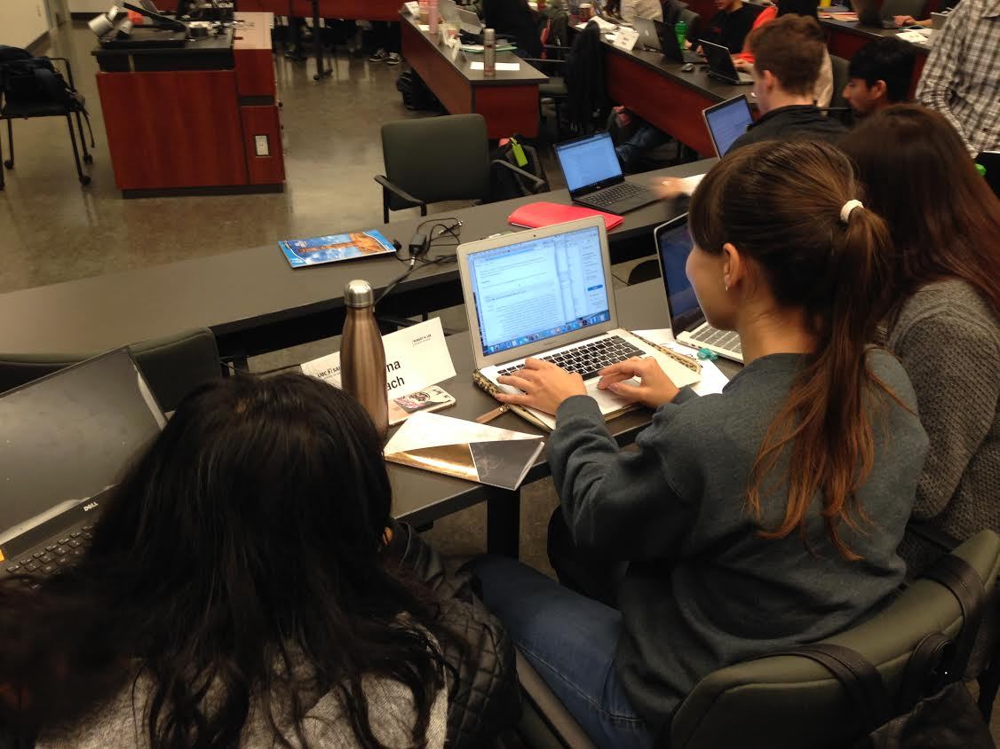

Toads in Vancouver - using Stencila to teach SQL and R at UBC
This post is cross-posted at the Software and Data Carpentry blog ! Thanks to Giulio and his students for beta-testing!
One of Stencila’s goals is to create an easy way for people who don’t yet code to learn data science and statistics skills, and to feel comfortable trying out powerful scientific computing languages like R, Python and Julia. We’re doing that by providing interfaces that are similar to the word processors and spreadsheets that they already use. It’s a way for people to “dip their toe” into code - without having to dive into the daunting ocean of IDEs, text editors, packages, version control etc.
Earlier this year, we connected with Giulio Valentino Dalla Riva ( @gvdr @ipnosimmia ) a data scientist based at the Master of Data Science programme at the University of British Columbia. Giulio is a Postdoctoral Teaching Fellow who teaches courses in statistics and data science for a broad range of students, many with no prior exposure to programming. More about Giulio here .
Giulio was interested in piloting Stencila in one of his fall courses on Data Management for Business Analytics: a course for Master’s level business students at the UBC’s Sauder School of Business. These students need to develop data science skills, but many had never used languages like R and SQL before. The intuitive Word- and Excel-like visual interfaces in Stencila are a powerful tool for data science education for students familiar with those environments. So we jumped at this opportunity to beta test Stencila and get the feedback we need to improve the platform for this use case.
Over the last two weeks, we watched from afar as Giulio introduced his students to data analysis concepts, R, SQL, and even delivered homework assignments and quizzes with the help of Stencila.

Stencila can be used in a number of ways but our initial focus has been on providing beta-testers with the downloadable Stencila Desktop . But Giulio knew from previous experience that when students are required to download a new program debugging installation issues can take up half the class time. So he was keen to try o ut our experimental, cloud deployment which runs Stencila inside Docker containers on a Kubernetes cluster.
For this course, Giulio summoned the toads! They’re our new favorite thing - Tiny Open Access Data Samples ! These small samples, available on Github, bundle awesome open datasets with tutorial style Stencila notebooks written in markdown. With the cloud version, students were able to use Giulio’s TOADS to learn how to write SQL queries and plot the results in R, all in the browser, just by clicking a link. Students were able to focus on learning data analysis methods and code and not worry about how to clone repositories, connect to databases or pass data between languages.
“Being able to get right to the code, thinking about the logic behind a query or the way in which data is organised is great!” - Giulio Valentino Dalla Riva
This was a definitely an early beta test for us and we had a few hiccups! But we learned how to handle 40 people all working on reproducible documents at once! (Thank you to the students for being our beta testers.)
The UBC students also tested our new RStudio integration . This integration makes it possible to view, edit, and save Markdown based documents using Stencila locally in the browser. Giulio used this to assign homework. Students were able to open .md files in the browser, and edit them, and save the changes.

“For students without a prior exposition to programming, it is important to reduce the cognitive overhead as much as possible. RStudio is wonderful, but it may scare some. Being able to work in a browser, in a slick clean interface, and interface smoothly SQLite and R boosted the students confidence.” -Giulio Valentino Dalla Riva, PhD
We are happy to report a successful test case of Stencila as a basic data science educational tool for students with no coding experience. We learned that students without coding experience were able to jump right into R with the Stencila interface. We also learned that the cloud deployment is a valuable tool for beginners, there’s nothing to install (though it’s not quite ready for wide use now).
“There were some hiccups, and students did find some bug. But they were aware of operating on a bleeding edge technology, and that was part of the experience. Overall, I think they were very excited.” - Giulio Valentino Dalla Riva, PhD
As with any good beta test, new feature requests came up and we uncovered a few bugs. For example, some students were confused about
the syntax for inserting code cells in external languages like R and SQL (e.g. sql()) and said they would prefer a dropdown menu to choose the language.
Do you want to make a toad? Tiny Open Access Data Samples are fun for all. We are happy to help you work with Giulio’s toads or check out one you’ve created! Join the conversation and share your thoughts Stencila’s features , toads, and reproducible documents on our community forum community.stenci.la/